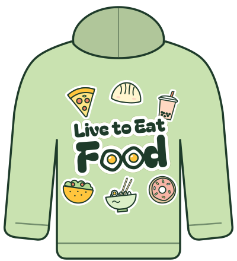
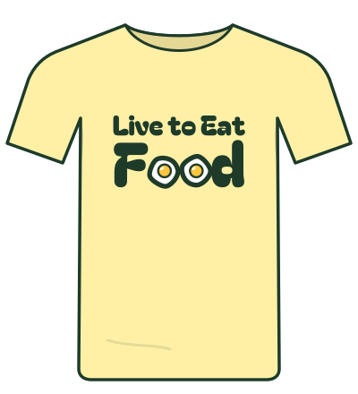
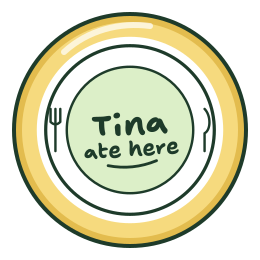
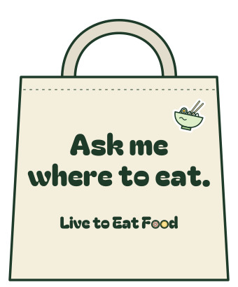
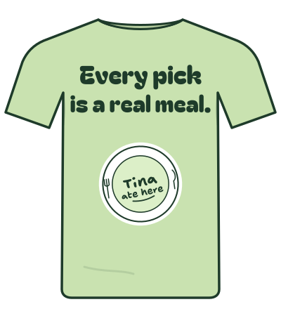

Wear what you eat.
On hold (Oct 2026). Tina wants to design the merch herself, in detail, later. These are concepts to start from, not a launch plan.
Merch is the brand walking around Worcester. Same stickers, same food o’s, same promise, printed in three inks or fewer so it stays affordable and looks good in a mirror selfie.







LTEF merch · Lookbook · Concepts for Tina’s approval · Not for sale yet
The core line
Six concept pieces, each built from marks already in the brand book. Garment colours are named to match the palette; get a printed proof before every first run.
Launch pieces
The Yolk Tee & the Promise Tee
Two tees, one idea. The Yolk Tee is the wordmark, big on the chest. The Promise Tee (back shown) puts the brand promise on your back with the stamp underneath, for the people who always get asked where to eat.
- Garment
- Garment-dyed heavyweight cotton in butter or sage tones
- Print
- Screen print, 2 inks: basil + yolk (Yolk Tee); basil + matcha + tomato (Promise Tee, back)
- Placement
- Chest centre, 10 in wide · Back, 11 in wide, 3 in below collar
- Files
- ltef-wordmark.svg · ltef-stamp-tina-ate-here.svg
Sunny Dad Hat
Unstructured six-panel cap with the egg embroidered on the front. No words, so it works on anyone.
- Garment
- Washed cotton twill, lemon or butter, matching eyelets
- Embroidery
- 3 threads: basil, white, yolk · 2.25 in wide
- Back
- One-line wordmark, 1.5 in, basil thread
Sticker-Bomb Hoodie
Quiet in front: one small egg on the left chest. Loud on the back: the wordmark surrounded by the food stickers, exactly as they appear on the site.
- Garment
- Midweight fleece, sage
- Print
- Front: embroidered egg, 3 in · Back: DTF full-colour, 12 in wide
- Note
- Back art uses every sticker’s white border, so it pops on any garment colour
The Sticker Pack
Eight food stickers, the lemon stamp and the Woo-pons ticket, kiss-cut on one sheet. The cheapest piece, the one that travels furthest: laptops, water bottles, takeout bags.
- Stock
- Matte white vinyl, waterproof, kiss-cut on a 5×7 in backing card
- Sizes
- Food stickers 2 in · stamp 3 in · Woo-pon 3.5×1.75 in
- Use
- Giveaway filler, merch-order freebie, event handout
- Files
- assets/stickers/*.svg (die-cut path = the white border)
Ask-Me Tote
For the friend who always gets the group text. Big enough for leftovers, groceries and a box of pastries.
- Bag
- 12 oz natural canvas, 15×16 in, gusset
- Print
- Screen print, 1–2 inks: basil (+ pistachio for the bowl)
Tina Ate Here Pin
The stamp as a 1.25 in soft-enamel pin. A collector piece for giveaways and top supporters.
- Make
- Soft enamel, gold plating, 2 posts
- Colours
- Matcha, white, tomato, basil, yolk
Eat-the-List Card
A pocket card for working through a guide: get it stamped with an egg at each Tina pick, finish the list, get a sticker pack.
- Stock
- 16 pt matte card, rounded corners, 3.5×2 in
- Stamp
- Self-inking 0.6 in egg stamp kept by participating places
- Status
- Idea: needs a guide and partner restaurants
LTEF merch · 2 · Core line
For restaurants
The stamp works in the real world too. A dated window decal says “Tina ate here” right where people decide whether to walk in. Paid listings get their own decal that says so.
Tina Ate Here Window Decal
Given, never sold, to places Tina has eaten at and recommends. The month of her visit is printed on it, so it can’t go stale quietly.
- Make
- Static-cling or front-adhesive vinyl, 5 in round
- Rule
- Only after a real, paid visit. No decals for sponsors, paid partners or hosted visits. Removed if Tina withdraws the pick.
- Text
- REAL MEAL · [MONTH YEAR] under the stamp
Featured On Decal (Paid)
For Charter merchants and Enhanced listings. It’s a business deal, so it looks like one: square, oat-hatched, “Paid listing” printed on it, and a QR code to the place’s page. It never carries the stamp.
- Make
- Front-adhesive vinyl, 6×7.6 in, rounded square
- Rule
- Only while the listing is paid. Comes down when it lapses. A place can show both decals only if Tina also ate there and paid.
- Text
- Featured on · Charter merchant · [year] · Paid listing
Also for partners
- Woo-pon counter card: a 4×6 in pistachio ticket for the register, “Show your Woo-pon here”.
- Takeout seal: 2 in round egg sticker to close bags, given in rolls to places running a Woo-pon.
- Menu clip: a small “Tina’s order” clip pointing at the dish she recommends, in her hand, with her own words.
- Event table tent: lemon A-frame for pop-ups and collabs.
None of these carry the stamp unless Tina has eaten there.
LTEF merch · 3 · Partner kit
Lines that print well
Short, true, and in the brand’s voice. Set in the brand’s lettering, basil on light garments or butter on basil. (Concepts drawn before Tina picked Outfit for headings; she’ll redesign merch herself.)
Every pick is a real meal.The promise. Back of the Promise Tee.
Ask me where to eat.Tote, tee. For the friend who always knows.
Let’s spin for it.Restaurant Roulette tie-in. Great on a sticker.
I paid for this meal.A cheeky nod to the trust promise. Sticker or tee.
Hungry in the 508.Local without a single building. Hat back or sleeve.
Live to eat.The name, cut short. Embroidery-friendly.
LTEF merch · 4 · Lines
More ideas for later
Worth a small test run once the core line sells through.

Ceramic mugButter glaze, egg on one side, “Live to eat.” on the other. Coffee-shop collab candidate.
Dumpling crew socksKnit pattern of dumplings, eggs and noodle bowls on sage. Giveaway favourite.

Chopstick sleevesPaper sleeves for partner restaurants, printed with Tina’s order tips in her own words.

Picnic bandana22 in square, lemon ground, scattered stickers. Doubles as a napkin for the drive-to spots.
Phone gripThe egg as a pop-out grip. For filming your own plate.
Kids’ tee“Future food critic.” Soft serve on the chest, butter garment.
LTEF merch · 5 · Later
Print specs
What to send the printer. Match ink to the hex values and ask for a physical proof; screen colours shift on cotton.
| Ink / thread | Hex | Use on merch | Rule |
|---|
| Basil | #1E3B2A | Letters, outlines, most one-colour prints | Every design has it. Never swap for black. |
|---|
| Yolk | #FFC53D | Egg yolks, small accents | Second ink on light garments. |
|---|
| White | #FFFFFF | Egg whites, sticker borders, prints on basil garments | Underbase on dark garments. |
|---|
| Matcha | #B3DA94 | The stamp | Only with the stamp. |
|---|
| Tomato | #B3311A | “Tina ate here” inside the stamp | Never as a standalone text ink. |
|---|
Garments
- Light, pastel-adjacent garments: butter, sage, natural, lemon. One basil garment per drop at most.
- No black, grey heather, red or navy blanks. They fight the palette.
- Garment-dyed cotton reads softer and closer to the pastels than bright white blanks.
Art
- Use the outlined SVGs in
assets/logo and assets/stickers; never retype the wordmark.
- Minimum line weight on fabric: 1.5 pt (0.5 mm). Stickers under 1.5 in lose their highlight.
- Merch mockups in
assets/merch are concept drawings, not production art.
LTEF merch · 6 · Specs
Every piece comes from the book.
Colours, marks and rules for all of this live in the brand book.
LTEF merch · 7